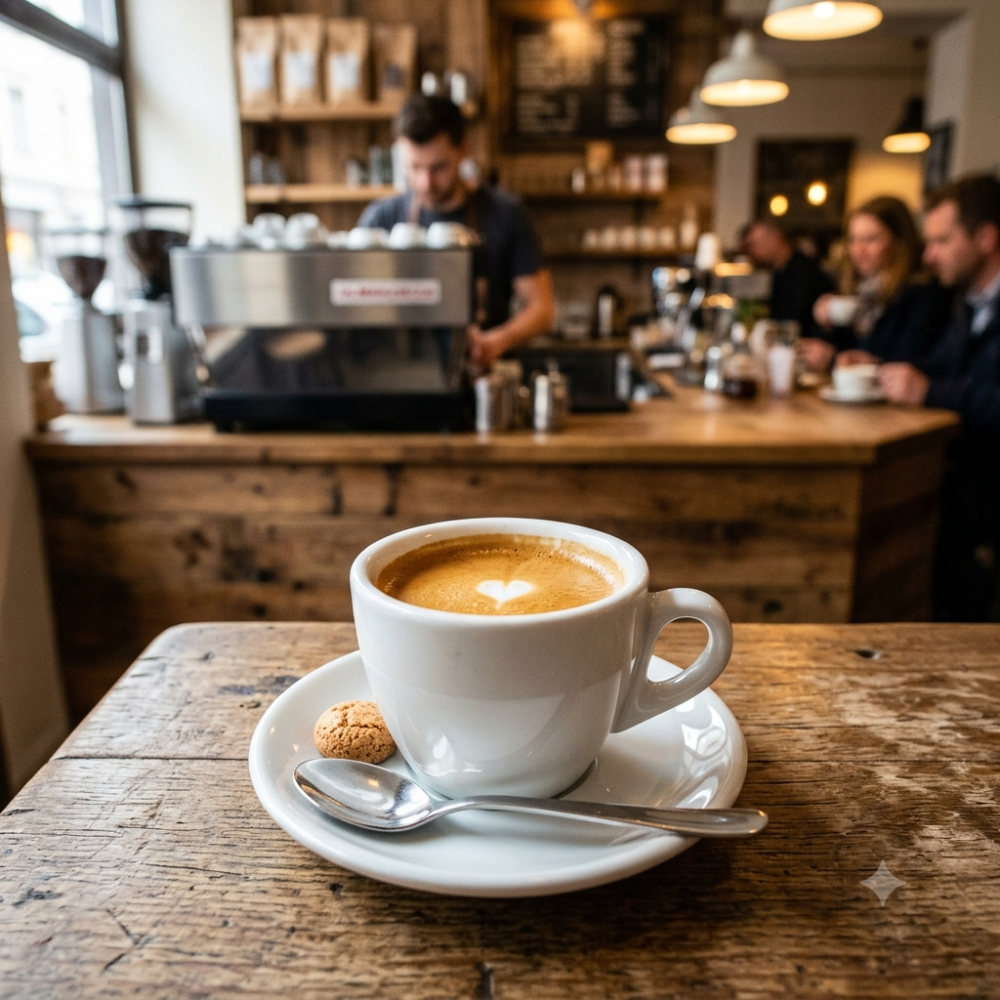

meu primeiro post
Por:Rafaela
boas-vindas ao meu site! Aqui vou compartilhar meu aprendizado do alura.
Vou estudar para desenvolver um site

Por:Rafaela
boas-vindas ao meu site! Aqui vou compartilhar meu aprendizado do alura.